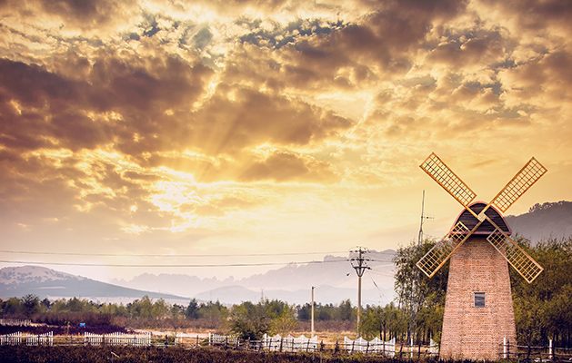
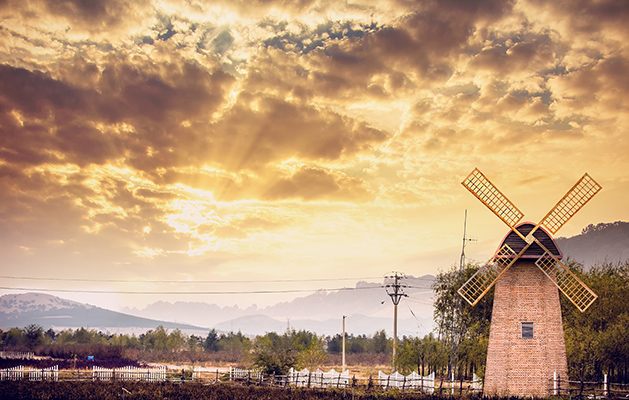

我的家乡——辽宁阜新
“玛瑙之都，煤电之城”
阜新，辽宁省辖地级市，位于辽宁省西部的低山丘陵区，为沈阳经济区重要城市之一，往南经锦州可直下京、津；北上经通辽可到霍林河矿区；东达沈阳及辽东沿海城市；西至朝阳、内蒙古赤峰，是辽宁西部的交通要道，中轴斜交于北纬42°10′和东经122°00′交点上，属北温带大陆季风气候。辖区总面积10445平方公里[1]，辖2县5区、1个国家级高新技术产业开发区、2个省级产业园区，户籍人口185.0万人（2018年末）[2]。2018年，生产总值446.0亿元，人均地区生产总值25340元。[2] 西周和东周春秋时期，今阜新市属幽州地域，有山戎、东胡人活动于此。市名源于清光绪二十九年在此地设置的阜新县。1945年，成立阜新市政府。1948年，阜新全境解放，属辽北省。1949年，划归辽西省。1954年，归属辽宁省。 境内初步探明有38种矿藏，矿产地228处。其中煤的储量较大，资源储量达10亿多吨。著名景点有：瑞应寺、海棠山摩崖造像、玍海遗址、懿州城等。
一、地理优势
阜新位于辽宁省西北部,地处东经121°01'一122°56',北纬41°41'-42°56'之间,东临省会沈阳市,南靠渤海辽东湾,与大连港南北相望,西与锦州港、京津地区襟衣相连,北邻内蒙古自治区.近海的北温带大陆型季风气候,使这里光照充足、雨热同季、四季分明,寒暑宜人。 （总的来说就是：“春有昆明的暖风，夏有承德的清凉，秋有北京香山的枫叶红，冬有哈尔滨白雪纷飞刺骨冷。)

二、风景名胜
1.辽宁阜新海棠山风景名胜区:位于辽宁西部，阜新市区东南25公里，是国家AAAA级旅游景区、国家森林公园，地处海棠山国家级自然保护区内。人民日报、中央电视台等46个新闻单位对海棠山发表过专题报道，誉之为“佛教艺术名山”。多年来，先后有美国、日本、新加坡、韩国等23个国家和地区的旅游者到这里观光。国务委员司马义?艾买提视察后题字赞美海棠山“含秀藏奇”,原全国人大常委会副委员长布赫、原全国民委副主任洛布桑、原全国宗教局局长洛桑赤耐等视察后对风景区给予极高评价。
2.发展历史：海棠山普安寺始建于清康熙二十二年(1683年)，历经六代五世活佛，是东方藏传佛教中心，素有“小布达拉宫”之称，2002年7月重新修复的措钦大殿正式落成。大殿建筑面积为968平方米，建筑宏伟，风格迥异，整个大殿用黄金6公斤，宝石1200块，是目前东北地区修复建设的最大一座藏传佛教庙宇。
2007年8月1日，辽宁海棠山经国务院批准列为国家级自然保护区。
3.主要景点：普安寺海棠山上的摩崖造像，素有“小布达拉宫”之称的普安寺措钦大殿，“中国藏传佛教黄教东方中心现存代表”。现有260余尊摩崖造像，据说这佛像身上的染料都是取海棠山上的一些植物配制而成的，使人们观后产生对悠久历史的追忆，对设计者和雕刻艺术匠人的丰富联想。海棠山摩崖造像，种类繁多，从山间到山巅，在大小不同的花岗岩石上，处处雕 刻着千变万化的佛 像，现保存完好的佛像260多尊，它们最高为5米，最小仅 0.3米。有的10尊佛像为1组，最多的一组群像有26尊称为“集仙石”。有些佛像龛上下左右刻有蒙、满、藏、梵和汉文字，有的还涂有彩绘，虽经历300 多年的时间，却色彩不退。海棠山摩崖造像的神态是千姿百态的，有的面含微笑，慈眉善目；
有的圆睁怒目，威风凛凛。在众多的佛像中，以释迦牟尼、观音菩萨、弥勒佛、红绿度丹、金刚力士、欢喜佛、千手千眼佛、天王佛、三头六臂佛、阿修罗等佛像为代表。其中，藏传佛教黄教创始人宗喀巴造像雕刻在一块高大凸起的岩石上，格外醒目。此外，还有藏传佛本尊诸佛，因而海棠山又被称为藏传佛教摩崖造像艺术名山。海棠山旅游风景区除摩崖造像外，这里的山峰秀丽，怪石、山溪、稀有的树木、野生花卉构成独特的自然风光。
红石谷景区石奇、松美、谷幽构成了自然景观的主要特征。红石谷内植物品种达400多种，森林覆盖率达86.6%。其山峰奇特、峻岭逶迤、沟壑幽深、怪石林立。还有生长了400多年的17棵古松紫柏傲立在悬崖峭壁之上，野生动物达40余种。海棠山国家森林公园曾连续三届入选辽宁生态旅游“十佳”森林公园。
海棠山已成为吸引人们的乐园，是阜新爱国主义教育基地之一。清凉的北方佛教名山。
阜新黄家沟旅游度假区是 水上乐园 滑雪场 温泉 户外拓展基地 农场 垂钓广场 等项目为一体的旅游度假胜地。黄家沟休闲营地，位于国家AAAA级景区——阜新黄家沟旅游度假区内，在黄家沟滑雪场和黄家沟水上乐园的西北侧。
营地内外绿树成荫，鸟语花香，湖面半环营地，夏有蛙鸣虫唱，冬有滑冰冬泳，这里就是休闲养生健康度假的世外挑源。营地植被覆盖率90%以上，空气清新，负氧离子含量高，是名副其实的绿色生态休闲园区。阜新黄家沟休闲营地是一个集沙滩浴场、星空露营、餐饮会议、儿童拓展、动物观赏、骑马放牧、葡萄采摘、赏花戏水为一体的综合型休闲场所。
其中沙滩浴场及星空露营属阜新首创，是人文与自然的完美结合。星空露营地全部草坪覆盖，设有多处遮阳天幕，同时规划了家庭型露营区、河景露营区等，满足不同客户群体的需求，露营区设有24小时安保人员及专门的烧烤区域，在享受BBQ带来乐趣的同时，确保您和财务的安全。
营地引进了阜新第一只羊驼，同时还有孔雀、香猪、鸵鸟、猕猴等性格温顺近人的珍稀动物，让游客在游玩投食的过程中，了解动物习性，和大自然亲密接触。 三、矿产资源的优势
阜新市优势矿产阜新市具有优势的矿产主要有:煤、煤层气、金、硅砂、沸石、萤石、麦饭石、泥炭。(煤:为优质长焰煤种,低硫、低磷、低灰份。保有储量6.8亿吨,占全省10.66%,居全省第二位。煤层气:以富瓦斯含量为主,开发利用条件好。保有储量220亿立方米,占全省6.4%,居全省第二位。金:分布范围广,大中型矿床集中,黄金成色较好,保有储量(金属量)52.34吨,占全省62.9%。硅砂:硅砂质纯,sio298―99.5%,fe2o3<0.05%,保有储量20亿吨,省内独有。沸石:质量较好,沸石含量40―82.21%,蒙脱石含量2.62―19.12%,以丝光沸石和斜发沸石为主,保有储量1513.7万吨,占全省44.42%。萤石:质量较好,有用矿物含量较高,保有储量228万吨,占全省50%以上。麦饭石:含有对人体有益的微量元素及化合物15种,属优质麦饭石,保有储量1.24亿吨,居全省第一位。

 
